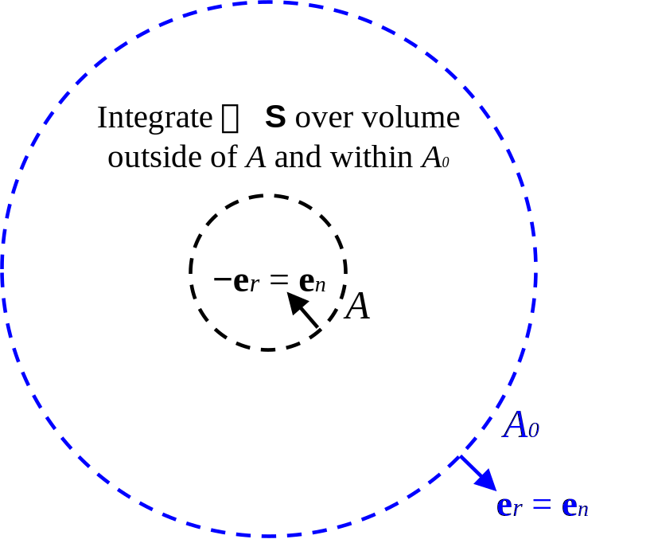

Kinetic and potential energy densities of fields predicted by linear acoustics are first derived from exact nonlinear expressions of the energies. Energy conservation yields a differential equation known as the acoustic Poynting theorem, which is written in terms of the energy densities of the linear acoustic fields. A differential equation for momentum conservation at quadratic order is then derived in terms of the acoustic radiation stress tensor. Diagonal elements of the matrix representation of this tensor are related to the mean excess pressure, which can be written in terms of energy densities. The acoustic radiation force equals the integral of the inhomogeneous momentum conservation equation.
The derivation of the potential and kinetic energy densities below are based on my class notes from Prof. Hamilton's Acoustics I course. These energy densities are quadratic quantities calculated by taking the product of two field variables that solve the linear acoustic wave equation.
The exact potential and kinetic energy densities (energy per unit volume) of sound are \begin{align} T &= \tfrac{1}{2} \rho v^2\,, \label{eq:acoust:ET} \\ U &= -\frac{1}{V_0} \int_{V_0}^{V} p\,dV\,, \label{eq:acoust:EV} \end{align} where \(p = P-P_0\) is the linear acoustic field variable, and where \(v^2 = \vec{v} \cdot \vec{v} = |\vec{v}|^2\). Equation \eqref{eq:acoust:ET} is linearized by writing \(\rho = \rho_0 + \rho'\), where \(\rho_0\) is a constant and \(\rho'\) is the acoustic (perturbation) quantity that is a function of space and time: \[T = \tfrac{1}{2} (\rho_0 + \rho')v^2\,.\] Neglecting the cubic term \(\rho'u^2\) yields \begin{align}\label{eq:kinetic} \boxed{T = \tfrac{1}{2}\rho_0v^2\,.} \end{align}
Linearizing Eq. \eqref{eq:acoust:EV} is more challenging, because \(dV\) is not a convenient differential. It is desired to instead integrate over the acoustic pressure \(p\). First, \(dV\) is written in terms of \(d\rho'\), and then \(\rho'\) is related to the pressure through the linearized equation of state, as is now shown.
Volume is related to density through the relation \(M = \rho V\), where \(M\) is mass. Writing \(V = M/\rho\) allows for the calculation of the derivative \[\frac{dV}{d\rho} = - \frac{M}{\rho^2}\,.\] Solving for \(dV\) yields \begin{align} dV &= - \frac{M}{\rho^2}\,d\rho \notag\\ &= -\frac{V}{\rho}d\rho\,,\label{eq:acoust:dV} \end{align} where in Eq. \eqref{eq:acoust:dV} the fact that \(M = \rho V\) has again been invoked. Noting that \(d\rho = d(\rho_0 + \rho') = d\rho'\) and \(V = V_0 + V'\), where \(V'\) is the acoustic volume, yields \begin{align} dV &= -(V_0 + V')(\rho_0 + \rho')^{-1} d\rho'\,,\label{eq:acoust:dV:1} \end{align} where \(1/\rho\) has been written as \((\rho+\rho')^{-1}\). Noting that \begin{align*} (\rho_0+\rho')^{-1} &= \frac{(1 + \rho'/\rho_0)^{-1}}{\rho_0} \simeq \frac{1 - \rho'/\rho_0}{\rho_0}\,, \end{align*} Eq. \eqref{eq:acoust:dV:1} becomes \begin{align} dV &= -(V_0 + V')(1 - \rho'/\rho_0)\frac{d\rho'}{\rho_0}\notag\\ &= -\frac{V_0}{\rho_0} d\rho' + \text{higher-order terms}\,,\label{eq:acoust:dV:2} \end{align} where in Eq. \eqref{eq:acoust:dV:2} only the linear term has been retained. Thus Eq. \eqref{eq:acoust:EV} becomes \begin{align} U = \frac{1}{\rho_0} \int_{0}^{\rho'} p\, d\tilde{\rho}'\,, \label{eq:acoust:EV:1} \end{align} where the integration is over \(\tilde{\rho}'\) so that the upper limit of integration is distinct from the integration variable. Equation \eqref{eq:acoust:EV:1} can be related to the acoustic pressure by appealing to the linearized equation of state \begin{align}\label{eq:state} \rho' = \frac{1}{c_0^2}p\,,\quad d\rho' = \frac{1}{c_0^2}dp, \end{align} which is derived by Taylor expanding \(P(\rho)\) as \(P_0 + (\partial P/\partial \rho)_0 (\rho-\rho_0)\) and identifying \((\partial P/\partial \rho)_0\) as \(c_0^2\). Equation \eqref{eq:acoust:EV:1} becomes \begin{align}\label{eq:potential} \boxed{U = \frac{1}{\rho_0c_0^2} \int_0^p \tilde{p}\, d\tilde{p} = \frac{p^2}{2\rho_0c_0^2 }} \end{align}
The following derivation is based on Sec. 1-11 of Ref. [5], in which it is called the "acoustic energy corollary." The theorem is not needed in deriving the radiation force, which follows from the conservation of momentum.
To derive the acoustic Poynting theorem, start with the linearized conservation of momentum {See Eq. (1-C-55) of Ref. [12]}, \begin{align}\label{eq:acoust:poynt:mom} \gradient p + \rho_0 \frac{\partial \vec{v}}{\partial t} = 0\,. \end{align} Dotting Eq. \eqref{eq:acoust:poynt:mom} into \(\vec{v}\) yields \begin{align}\label{eq:acoust:poynt:mom:2} \vec{v} \cdot \gradient p + \rho_0 \vec{v} \cdot \frac{\partial \vec{v}}{\partial t} = 0\,. \end{align} Noting that \(\vec{v} \cdot \partial \vec{v}/\partial t = \tfrac{1}{2} \partial v^2/\partial t\), Eq. \eqref{eq:acoust:poynt:mom:2} becomes \begin{align}\label{eq:acoust:poynt:mom:3} \vec{v} \cdot \gradient p + \tfrac{1}{2} \rho_0\frac{\partial v^2}{\partial t} = 0\,. \end{align} Noting that \(\divergence(p\vec{v}) = \vec{v} \cdot \gradient p + p \divergence \vec{v}\), and defining the instantaneous Poynting vector \(\vec{S} = p\vec{v}\) (energy per unit time per unit area), allows for Eq. \eqref{eq:acoust:poynt:mom:3} to be written as \begin{align}\label{eq:acoust:poynt:mom:4} \divergence \vec{S} - p\divergence\vec{v} + \frac{\partial T}{\partial t} = 0\,, \end{align} where the third term follows from identifying \((\rho_0/2){\partial v^2}/{\partial t}\) as the time derivative of Eq. \eqref{eq:kinetic}. Meanwhile, the second term of Eq. \eqref{eq:acoust:poynt:mom:4} resembles the quantity that appears in the linearized conservation of mass equation, \({\partial \rho'}/{\partial t} + \rho_0 \divergence \vec{v} = 0\), which when combined with the linearized state equation \(p/c_0^2 = \rho'\), yields \begin{align}\label{eq:acoust:poynt:mass} \frac{1}{c_0^2}\frac{\partial p}{\partial t} + \rho_0 \divergence\vec{v} = 0\,. \end{align} Multiplying Eq. \eqref{eq:acoust:poynt:mass} by \(p/\rho_0\) and rearranging yields \begin{align}\label{eq:acoust:poynt:mass:2} -p\divergence\vec{v} = \frac{p}{\rho_0c_0^2}\frac{\partial p}{\partial t} = \frac{1}{2\rho_0c_0^2}\frac{\partial p^2}{\partial t} = \frac{\partial U}{\partial t}\,, \end{align} where the last equality holds by Eq. \eqref{eq:potential}. Inserting Eq. \eqref{eq:acoust:poynt:mass:2} into Eq. \eqref{eq:acoust:poynt:mom:4} yields \begin{align}\label{eq:acoust:poynt:thm} \boxed{\divergence \vec{S} + \frac{\partial}{\partial t}(T + U) = 0\,,} \end{align} which is the acoustic Poynting theorem. The integral form of Eq. \eqref{eq:acoust:poynt:thm} is obtained by integrating over free space and applying the divergence theorem to the first term: \begin{align}\label{eq:acoust:poynt:thm:int} \oint_A \vec{S} \cdot d\vec{A} + \frac{d}{dt}\int(T + U) dV = 0\,. \end{align} If the volume includes an object whose impedance is other than \(\rho_0c_0\), then the right-hand side of Eq. \eqref{eq:acoust:poynt:thm:int} becomes the rate of work done on that object, \(-{dW}/{dt}\), which equals \(-\mathcal{P}\), the power radiated on the object. If \(p\) and \(\vec{v}\) are time-harmonic, time-averaging that equation over an integral number of half periods and invoking Item 2 of the useful identities sets the second term on the left-hand side to zero, yielding \begin{align}\label{eq:acoust:poynt:thm:int:1} \oint_A \langle\vec{S}\rangle \cdot d\vec{A} = -\langle \mathcal{P}\rangle \,. \end{align} If the object is a source of sound {See pp. 39-41 of Ref. [5], in particular, Eq. (1-11.14)}, then we speak of the power radiated by the object, which is minus the power radiated on the object.
This section is partially based on Sec. 2.1 of Ref. [6], but the discussion here is more general in the following ways:
Neglecting terms related to viscocity, the exact conservation of (linear) momentum requires that \begin{align}\label{eq:mom:exact} \rho\frac{\partial \vec{v}}{\partial t} + \rho\vec{v} \cdot \gradient \vec{v} = -\gradient P\,, \end{align} where \(P\) is the total pressure. Meanwhile, the exact conservation of mass requires that \begin{align}\label{eq:cont:exact} \frac{\partial \rho}{\partial t} + \divergence (\rho \vec{v}) = 0\,. \end{align} Multiplying Eq. \eqref{eq:cont:exact} by \(\vec{v}\) yields \begin{align}\label{eq:cont:exact:1} \vec{v}\frac{\partial \rho}{\partial t} + \vec{v} \divergence (\rho \vec{v}) = \vec{0}\,. \end{align} Adding Eqs. \eqref{eq:mom:exact} and \eqref{eq:cont:exact:1} yields \[\rho\frac{\partial \vec{v}}{\partial t} + \rho\vec{v} \cdot \gradient \vec{v} + \vec{v}\frac{\partial \rho}{\partial t} + \vec{v} \divergence (\rho \vec{v}) = -\gradient P\,.\] Rearranging terms yields \begin{align}\label{eq:pre-take-avg} \rho\frac{\partial \vec{v}}{\partial t} + \vec{v}\frac{\partial \rho}{\partial t} + \rho\vec{v} \cdot \gradient \vec{v} + \vec{v} \divergence (\rho \vec{v}) = -\gradient P\,. \end{align} Using the product rules \(\rho\partial \vec{v}/\partial t + \vec{v}\partial \rho/\partial t = \partial(\rho\vec{v})/\partial t\) and \(\rho\vec{v} \cdot \gradient \vec{v} + \vec{v} \divergence (\rho \vec{v}) = \divergence (\rho \vec{v}\otimes \vec{v})\) (see Item 1 of "Useful identities") yields \begin{align}\label{eq:take-avg} \frac{\partial (\rho\vec{v})}{\partial t} + \divergence (\rho \vec{v}\otimes \vec{v}) = -\gradient (P-P_0)\,, \end{align} where \(\gradient P\) in Eq. \eqref{eq:pre-take-avg} has been replaced by \(\gradient(P-P_0)\), where \(P_0\) is the (constant) ambient pressure,
Equation \eqref{eq:take-avg}, which is exact, is now reduced to quadratic order. The right-hand side of Eq. \eqref{eq:take-avg} can be simplified by appealing to the Taylor expansion of the total pressure \(P\) in the enthalpy per unit mass \(w\): \begin{align}\label{eq:taylor} P = P_0 + \left(\frac{\partial P}{\partial w}\right)_{s,0}w + \frac{1}{2}\left(\frac{\partial^2 P}{\partial w^2 }\right)_{s,0}w^2 + \dots\,. \end{align} {The choice of \(w\) as the independent variable will be appreciated later, though no justification or motivation is provided in Sec. 2.1.3 of Ref. [6], on which this portion of the present derivation is based.} From thermodynamics, the differential enthalpy per unit mass is \(dw = T ds + dP/\rho\), which, for an isentropic process (\(ds = 0\)), reduces to \begin{align}\label{eq:enthalpy} dw = \frac{dP}{\rho}\,. \end{align} Equation \eqref{eq:enthalpy} shows that the partial derivative \((\partial P/\partial w)_{s,0}\) equals the ordinary derivative \(dP/dw = \rho\) for an isentropic process. Thus \((\partial^2 P/\partial w^2)_{s,0} = (\partial \rho/\partial w)_{s,0}\), and Eq. \eqref{eq:taylor} becomes \begin{align} P - P_0 &= \rho w + \frac{1}{2}\left(\frac{\partial\rho}{\partial w} \right)_{s,0}w^2 + \dots\,.\label{eq:taylor:simp} \end{align} Further, since \[\frac{\partial \rho}{\partial w} = \frac{\partial \rho}{\partial P}\frac{\partial P}{\partial w} = \frac{1}{c^2} \frac{dP}{dw} = \frac{\rho}{c^2}\,,\] where Eq. \eqref{eq:enthalpy} has been used in the last equality, Eq. \eqref{eq:taylor:simp} becomes \begin{align} P - P_0 &= \rho_0 w + \frac{\rho_0}{2c_0^2} w^2 + \dots\,.\label{eq:taylor:simp:2} \end{align} Next, to evaluate \(w\) and \(w^2\) in Eq. \eqref{eq:taylor:simp:2}, Eq. \eqref{eq:enthalpy} is divided by \(d\vec{r}\), yielding \begin{align}\label{eq:enthalpy:2} \gradient w = \frac{\gradient P}{\rho}\,. \end{align} Equation \eqref{eq:enthalpy:2} is equated to the left-hand side of the exact momentum equation given by Eq. \eqref{eq:mom:exact} divided by \(\rho\): \begin{align}\label{eq:ex:mom} -\gradient w = -\frac{\gradient P}{\rho} = \frac{\partial \vec{v}}{\partial t} + \vec{v} \cdot \gradient \vec{v}\,. \end{align} Noting that \(w\) appears in Eq. \eqref{eq:taylor:simp}, it is desired to integrate Eq. \eqref{eq:ex:mom} over volume so as to remove the gradient operator. To facilitate this manipulation, the velocity potential \(\phi\) is introduced, where \(\vec{v} = \gradient \phi\). No generality is lost because in the absence of viscocity terms in Eq. \eqref{eq:mom:exact}, the velocity field is irrotational (\(\curl \vec{v}=\vec{0}\)), and thus \(\vec{v}\) is equal to the gradient of a scalar potential \(\phi\). In terms of \(\phi\), Eq. \eqref{eq:ex:mom} becomes \begin{align}\label{eq:ex:mom:1} -\gradient w =\gradient \frac{\partial \phi}{\partial t} + \gradient \phi \cdot \gradient \gradient \phi\,. \end{align} Noting by the product rule that \begin{align*} \gradient \phi \cdot \gradient\gradient \phi = \tfrac{1}{2}\gradient (\gradient \phi \cdot \gradient \phi) = \tfrac{1}{2}\gradient(|\gradient \phi|^2) \,, \end{align*} Eq. \eqref{eq:ex:mom:1} becomes \begin{align}\label{eq:ex:mom:2} \gradient w = -\gradient \left[\frac{\partial \phi}{\partial t} - \tfrac{1}{2} |\gradient \phi|^2 \right]\,. \end{align} Equation \eqref{eq:ex:mom:2} can be integrated over volume, introducing an arbitrary constant \(C'\), which is a quadratic quantity, according to Ref. [6]: \begin{align}\label{eq:ex:mom:3} w = -\frac{\partial \phi}{\partial t} - \tfrac{1}{2} |\gradient \phi|^2 + C'\,. \end{align} The motivation for expanding \(P\) in \(w\) can finally be appreciated: it was possible to use the momentum equation to express \(w\) in terms of \(\phi\), its gradient, and its time derivative. Inserting Eq. \eqref{eq:ex:mom:3} into Eq. \eqref{eq:taylor:simp:2} yields Eq. (11) of Ref. [6]: \begin{align} P - P_0 &= \rho_0\left(-\frac{\partial \phi}{\partial t} - \tfrac{1}{2} |\gradient \phi|^2 + C' \right) + \frac{\rho_0}{2c_0^2} \left( -\frac{\partial \phi}{\partial t} - \tfrac{1}{2} |\gradient \phi|^2 + C'\right)^2 + \dots\,.\label{eq:taylor:simp:3} \end{align} Equation \eqref{eq:taylor:simp:3} is inserted in the right-hand side of Eq. \eqref{eq:take-avg}. Meanwhile, on the left-hand side of Eq. \eqref{eq:take-avg}, the density is written as \(\rho = \rho_0 + \rho'\), resulting in \begin{align}\label{eq:take-avg:1} \frac{\partial [(\rho_0 + \rho')\vec{v}]}{\partial t} + \divergence [(\rho_0+\rho') \vec{v}\otimes \vec{v}] = -\rho_0 \gradient \left[ \left(-\frac{\partial \phi}{\partial t} - \tfrac{1}{2} |\gradient \phi|^2 + C' \right) + \frac{1}{2c_0^2} \left( -\frac{\partial \phi}{\partial t} - \tfrac{1}{2} |\gradient \phi|^2 + C'\right)^2 + \dots\right]. \end{align} The velocity potential on the right-hand side of Eq. \eqref{eq:take-avg:1} is elliminated by invoking the linearized version of Eq. \eqref{eq:mom:exact} given by Eq. \eqref{eq:acoust:poynt:mom}, which in terms of \(\phi\) reads \begin{align}\label{eq:pot} \gradient p = -\rho_0 \frac{\partial \vec{v}}{\partial t} = -\rho_0 \gradient \frac{\partial \phi}{\partial t}\,. \end{align} Equation \eqref{eq:take-avg:1} then becomes \begin{align}\label{eq:take-avg:2} \underline{\rho_0\frac{\partial \vec{v}}{\partial t}} + \underline{\underline{\frac{\partial \rho'\vec{v}}{\partial t} }} + \underline{\underline{\rho_0\divergence (\vec{v}\otimes \vec{v})}} = - \underline{\gradient p} + \underline{\underline{\gradient \left( \tfrac{1}{2} \rho_0v^2 - p^2 /2\rho_0c_0^2 + \rho_0 C'\right)}}\,, \end{align} where are linear terms have been underlined, quadratic terms have been double-underlined, and higher-order terms have been neglected. By recalling Eqs. \eqref{eq:kinetic} and \eqref{eq:potential}, the quantity \((\rho_0/2)v^2 - p^2 /2\rho_0c_0^2\) on the right-hand side of Eq. \eqref{eq:take-avg:2} is identified as the Lagrangian density \(L = T-U\). Further, note by Item 3 of the useful identities that \(\dyad{I} \cdot \gradient f = \divergence(\dyad{I} f) - f \divergence \dyad{I}\), where \(\dyad{I}\) is the identity tensor. Since \(\divergence \dyad{I} = \vec{0}\), one can equivalently write \(\dyad{I} \cdot \gradient f = \divergence(\dyad{I} f)\). The second term on the right-hand side of Eq. \eqref{eq:take-avg:2} can therefore be written as \(\divergence [\dyad{I} (L + \rho_0 C')]\). Equation \eqref{eq:take-avg:2} becomes \begin{align}\label{eq:take-avg:3} \underline{\rho_0\frac{\partial \vec{v}}{\partial t}} + \underline{\underline{\frac{1}{c_0^2}\frac{\partial p\vec{v}}{\partial t} }} = - \underline{\gradient p} + \underline{\underline{\divergence [\dyad{I} (L + \rho_0 C')] - \rho_0\divergence (\vec{v}\otimes \vec{v})}}\,, \end{align} where the linearized state equation given by Eq. \eqref{eq:state} has been invoked in the second term on the left-hand side. Equating the linear terms in Eq. \eqref{eq:take-avg:3} yields \begin{align}\label{eq:mom:lin} \gradient p + \rho_0\frac{\partial \vec{v}}{\partial t} = \vec{0} \,, \end{align} which recovers the linearized momentum equation given by Eq. \eqref{eq:acoust:poynt:mom}, while equating the quadratic terms in Eq. \eqref{eq:take-avg:3} yields \begin{align}\label{eq:mom:quad} %\frac{1}{c_0^2}\frac{\partial p\vec{v}}{\partial t} = \divergence (\dyad{I} L ) - \rho_0\divergence (\vec{v}\otimes \vec{v}), \boxed{\frac{\partial \vec{g}}{\partial t} = \divergence \dyad{T}\,,} \end{align} where \begin{align}\label{eq:g} \vec{g} \equiv \vec{S}/c_0^2 \end{align} is the momentum density in the acoustic fields (where \(\vec{S} = p\vec{v}\) is the instantaneous acoustic Poynting vector), and where \begin{align}\label{eq:T} \dyad{T} \equiv \dyad{I} (L + \rho_0 C') - \rho_0 \vec{v}\otimes \vec{v} \end{align} is the instantaneous acoustic radiation stress tensor, where \(-\dyad{T}\) is the momentum flux transported by the fields. The acoustic radiation stress tensor is symmetric, as can be seen by noting that \(\dyad{I} = \dyad{I}^\mathrm{T}\) (See the final equation of Items 5 of the useful identities) and \((\vec{v}\otimes \vec{v})^\mathrm{T} = \vec{v} \otimes \vec{v}\) (See Item 6 of the useful identities for the special case \(\vec{u} = \vec{v}\)). Since the transpose operation is linear, the sum of two symmetric tensors is also symmetric, proving that \begin{align}\label{eq:stress:sym} \dyad{T} = \dyad{T}^\mathrm{T}\,. \end{align}
Integrating Eq. \eqref{eq:mom:quad} over free space and invoking the divergence theorem for tensors yields an integral version of Eq. \eqref{eq:mom:quad} \begin{align}\label{eq:mom:quad:int} %\frac{d\vec{p}_\mathrm{mech}}{dt} = \oint_{A} \dyad{T} \cdot \,d\vec{A} - \frac{d}{dt} \int_V \vec{g} \,dV\,. \oint_{A} \dyad{T} \cdot \,d\vec{A} - \frac{d}{dt} \int_V \vec{g} \,dV = \vec{0}\,. \end{align} The first integral in Eq. \eqref{eq:mom:quad:int} is the "momentum per unit time flowing in through the surface," while the quantity \(\int_V \vec{g} \,dV\) represents the "momentum stored in the fields" [3].
Since Eq. \eqref{eq:mom:quad:int} was derived by integrating over free space, there is no change of mechanical momentum in the volume \(V\) per unit time. If there is an object in \(V\), then the right-hand side of Eq. \eqref{eq:mom:quad:int} equals \(d\vec{p}_\mathrm{mech}/dt\), which according to Newton's second law is the force \(\vec{F}\) on the object.
Conserving angular momentum is discussed in Ref. [16] and amounts to crossing the position vector \(\vec{r}\) into Eqs. \eqref{eq:mom:exact} and \eqref{eq:cont:exact}. In view of Eqs. \eqref{eq:take-avg} and \eqref{eq:taylor:simp:3}, the conservation of angular momentum requires that \begin{align}\label{eq:ang} \boxed{\frac{\partial \boldsymbol{\ell}}{\partial t} = \vec{r}\times \divergence \dyad{T}\,,} \end{align} where the angular momentum density is \begin{align} \label{eq:ell} \boldsymbol{\ell} \equiv \vec{r} \times \vec{g} = \vec{r} \times \vec{S}/c_0^{2}\,. \end{align}
It is now assumed that \(p\) and \(\vec{v}\) are time-harmonic. The time average of \( C'\) is denoted \(C\), which is nonzero since \(C'\) is a quadratic quantity. Meanwhile, invoking Item 2 of the useful identities shows that \(\langle {\partial \vec{g}}/{\partial t}\rangle = \vec{0}\) and \(\langle {\partial \vec{\boldsymbol{\ell}}}/{\partial t}\rangle = \vec{0}\). The time averages of Eqs. \eqref{eq:mom:quad} and \eqref{eq:ang} are therefore \begin{align}\label{eq:mom:stress} \boxed{\divergence \dyad{S} = \vec{0}\,.} \end{align} and \begin{align}\label{eq:mom:stress:r} \boxed{\vec{r}\times \divergence \dyad{S} = \vec{0}\,,} \end{align} respectively, where \(\dyad{S} \equiv \langle \dyad{T}\rangle\). Equations \eqref{eq:mom:stress} and \eqref{eq:mom:stress:r} are the partial differential equation that conserve the linear and angular momentum of time-harmonic waves to quadratic order.
As was the case for Eq. \eqref{eq:mom:quad:int}, Eqs. \eqref{eq:mom:stress} and \eqref{eq:mom:stress:r} were derived by integrating over free space, which implies that there is no change of mechanical linear or angular momentum in the volume \(V\) per unit time. If there is an object in \(V\), then the right-hand side of Eq. \eqref{eq:mom:quad:int} equals \(d\vec{p}_\mathrm{mech}/dt\) and \(d(\vec{r}\times \vec{p}_\mathrm{mech})/dt\), which according to Newton's second law is the force \(\vec{F}\) and torque \(\vec{}\)on the object.
For time-harmonic fields, application of the divergence theorem to Eq. \eqref{eq:mom:stress} shows that \(\oint_A \dyad{S} \cdot d\vec{A}\) is the radiation force \(d\vec{p}_\mathrm{mech}/dt\) on an object. The calculation of radiation force on an object immediately enclosed by a spherical surface \(A\) (enclosing a corresponding volume \(V\)) can be reduced to an integral in the far field, which is described by a much larger spherical surface \(A_0\) (enclosing a corresponding volume \(V_0\) and concentric with \(A\)), as shown below:
The reduction of the calculation of the force to an integral in the far field is attributed to Ref. [10] (which is in turn based on Ref. [9]). Reference [6] (Sec. 3.1.2) summarizes the procedure in those works as follows, where the notation has been modified to fit the present conventions:
By integrating \(\divergence \dyad{S} = 0\) over the space between [the surface] \(A\) and a much larger spherical surface \(A_0\) concentric with the sphere, and using Gauss's theorem, we obtain a surface integral of \(\dyad{S}\cdot \vec{e}_n\) over \(A' = A + A_0\), equated to zero, where \(\vec{e}_n\) is the normal unit vector on the surface \(A'\) pointing away from the enclosed space... [T]he integral over \(-\dyad{S} \cdot \vec{e}_n\) over \(A\) is the force acting on the sphere...
Equation \eqref{eq:mom:stress} is integrated over the volume within surface \(A_0\) but outside surface \(A\): \begin{equation}\label{eq:mom:stress:int:1} \int_{V_0} \gradient_0 \cdot \dyad{S}(\vec{r}_0)\,dV_0 - \int_V \divergence \dyad{S}(\vec{r})\,dV = \vec{0}\,. \end{equation} Upon invoking the divergence theorem, the first term in Eq. \eqref{eq:mom:stress:int:1} becomes \(\oint_{A_0} \dyad{S}(\vec{r}_0)\cdot \vec{e}_r\, dA_0\), while the second term becomes \(-\oint_A \dyad{S}\cdot \vec{e}_r\, dA\), where \(\vec{e}_r\) is the radial unit vector: \begin{equation}\label{eq:mom:stress:int:2} \oint_{A_0} \dyad{S}(\vec{r}_0)\cdot \vec{e}_r\,dA_0 -\oint_A \dyad{S}(\vec{r}) \cdot \vec{e}_r\, dA =\vec{0}\,. \end{equation} Since it is desired for the radiation force on the object enclosed by \(A\) to be defined with respect to the inward normal, \(\vec{e}_n\) is identified as \(-\vec{e}_r\) on \(A\), while it \(\vec{e}_n\) is identified as \(\vec{e}_r\) on \(A_0\), as shown in the figure above: \begin{equation}\label{eq:mom:stress:int:3} \oint_{A_0} \dyad{S}(\vec{r}_0)\cdot \vec{e}_n\,dA_0 + \oint_A \dyad{S}(\vec{r}) \cdot \vec{e}_n\, dA =\vec{0}\,. \end{equation} Solving Eq. \eqref{eq:mom:stress:int:3} for \(-\oint_A \dyad{S}\cdot \vec{e}_n\, dA\) results in the radiation force on the object enclosed by \(A\): \begin{equation}\label{eq:mom:stress:int} {\vec{F} = -\oint_A \dyad{S}(\vec{r}) \cdot \vec{e}_n\, dA = \oint_{A_0} \dyad{S}(\vec{r}_0)\cdot \vec{e}_n\,dA_0 \,.} \end{equation} The first equality of Eq. \eqref{eq:mom:stress:int}, when expressed in index notation, recovers the first equation (not numbered) in Ref. [7]. When expressed in terms of the indicial form of the acoustic radiation stress tensor, Eq. \eqref{eq:mom:stress:int} recovers Eq. (82) of Ref. [6]: \begin{equation}\label{eq:mom:stress:int:ind} F_i = \oint_A [\delta_{ij} \langle P-P_0 \rangle + \rho_0 \left\langle v_i v_j\right\rangle] \, {n}_j\, dA = -\oint_{A_0} [\delta_{ij} \langle P-P_0 \rangle + \rho_0 \left\langle v_i v_j\right\rangle]\, {n}_j\,dA_0 \,. \end{equation} [Note the typo in Eq. (82) of the second edition of Ref. [6]: "\(F_z\)" should read "\(F_i\)." The force becomes \(F_z\) in Eq. (84), in which azimuthal symmetry has been assumed in Eq. (83). This typo has been corrected in the third edition.] Symbolically, Eq. \eqref{eq:mom:stress:int:ind} reads \begin{align} \boxed{\vec{F} = \oint_{A_0} \left[\dyad{I} \langle L\rangle - \rho_0 \left\langle \vec{v}\otimes \vec{v}\right\rangle\right]\cdot \vec{e}_n\,dA_0\,,}\label{eq:int:F:L} \end{align} where the constant \(C\) has been set to zero to ensure "zero perturbation at infinity" {See Ref. [6], p. 182}. Equation \eqref{eq:int:F:L} is equivalent to Eq. (4) of Ref. [10]. When reduced to index notation and expressed in terms of velocity potential \(\phi\), Eq. \eqref{eq:int:F:L} recovers the equation at the top of the second column on the first page of Ref. [7]. Equation \eqref{eq:int:F:L} reveals the utility of the surface integral over \(A_0\) in the second equality of Eq. \eqref{eq:mom:stress:int}: since the surface \(A_0\) can be arbitrarily large, the calculation of the radiation force \(\vec{F}\) amounts to solving the far-field linear scattering problem (which provides \(p\) and \(\vec{v}\)), taking time averages of \(p^2\), \(v^2\), and \(\vec{v} \otimes \vec{v}\), and integrating the results over \(A_0\). Indeed, Gor'kov writes [7],
[F]or the calculation of the average force correct up to terms of the second order in the velocity, it is sufficient to find the solution of the linear scattering problem.
To calculate radiation torque, Eq. \eqref{eq:mom:stress:r} is integrated over the volume within surface \(A_0\) but outside surface \(A\), as was done for Eq. \eqref{eq:mom:stress} above:
\begin{equation}\label{eq:mom:stress:int:r:1}
\int_{V_0} \vec{r}_0 \times \gradient_0 \cdot \dyad{S} (\vec{r}_0)\,dV_0 - \int_V \vec{r} \times\divergence \dyad{S}(\vec{r})\,dV = \vec{0}\,.
\end{equation}
Item 5 of the useful identities allows for the acoustic radiation stress tensor to be expressed as
\begin{equation}\label{eq:stress:sym:1}
\dyad{S} = \dyad{S}\cdot \dyad{I} = \dyad{S}\cdot (\gradient \vec{r})^{\mathrm{T}}\,.
\end{equation}
Equation \eqref{eq:stress:sym:1} can equivalently be written as
\begin{equation}\label{eq:stress:sym:2}
\dyad{S}\cdot (\gradient \vec{r})^{\mathrm{T}} = (\gradient \vec{r})^{\mathrm{T}} \cdot \dyad{S} = (\gradient \vec{r}) \cdot \dyad{S}^\mathrm{T} = [\dyad{S} \cdot (\gradient \vec{r})^{\mathrm{T}}]^\mathrm{T}\,,
\end{equation}
where the first equality holds because \(\dyad{S} \cdot \dyad{I} = \dyad{I} \cdot \dyad{S}\), where the second equality holds by Item 5 of the useful identities, and where the third equality holds by Item 7 of the useful identities. Comparing the far left-hand and right-hand sides of Eq. \eqref{eq:stress:sym:2} shows that
\[\dyad{S}\cdot (\gradient \vec{r})^{\mathrm{T}} - [\dyad{S}\cdot (\gradient \vec{r})^{\mathrm{T}}]^\mathrm{T} = \dyad{0}\,,\]
a condition that can be characterized in terms of the axial vector defined in Item 9 of the useful identities:
\begin{equation}\label{eq:stress:sym:3}
2\mathrm{ax} [\dyad{S}\cdot (\gradient \vec{r})^{\mathrm{T}}] = \mathrm{ax} \left\{\dyad{S}\cdot (\gradient \vec{r})^{\mathrm{T}} - [\dyad{S}\cdot (\gradient \vec{r})^{\mathrm{T}}]^\mathrm{T} \right\} = \vec{0}\,.
\end{equation}
Adding Eq. \eqref{eq:stress:sym:3} to the integrands of Eq. \eqref{eq:mom:stress:int:r:1} therefore leaves Eq. \eqref{eq:mom:stress:int:r:1} unchanged:
\begin{align}\label{eq:stress:sym:2:2}
\int_{V_0} \left\{ 2\mathrm{ax}[\dyad{S}(\vec{r}_0)\cdot (\gradient \vec{r}_0)^{\mathrm{T}}] + \vec{r}_0 \times \gradient_0 \cdot \dyad{S} (\vec{r}_0) \right\} -
\int_V \left\{2\mathrm{ax} [\dyad{S}\cdot (\gradient \vec{r})^{\mathrm{T}}] + \vec{r} \times\divergence \dyad{S}(\vec{r}) \right\}\,dV = \vec{0}\,.
\end{align}
Invoking Item 8 of the useful identities allows for Eq. \eqref{eq:stress:sym:2:2} to be written as
\begin{align}\label{eq:mom:stress:r:div}
\int_{A_0} \vec{r}_0 \times [\dyad{S}(\vec{r}_0) \cdot \vec{e}_r] \,dA_0 -
\int_{A} \vec{r} \times [\dyad{S}(\vec{r}) \cdot \vec{e}_r] \,dA = \vec{0}\,.
\end{align}
The following approach to calculating radiation force on objects subjected to planar traveling waves is credited to Westervelt [9, 10].
For both traveling and standing wave configurations, the pressure and particle velocity fields are written in terms of the incident fields (subscripted "\(i\)") and scattered fields (subscripted "\(s\)"), \begin{align} p &= p_i + p_s \label{eq:scat:total:p}\\ \vec{v} &= \vec{v}_i + \vec{v}_s\,, \label{eq:scat:total:v} \end{align} and thus the Lagrangian density can be expanded as \(L = L_i + L_s + L_{is}\), where \begin{align} L_i &= \tfrac{1}{2}\rho_0 v_i^2 - p_i^2/2\rho_0c_0^2 \,, \label{eq:L:i}\\ L_s &= \tfrac{1}{2}\rho_0 v_s^2 - p_s^2/2\rho_0c_0^2 \,, \label{eq:L:s}\\ L_{is} &= \rho_0 \vec{v}_i \cdot \vec{v}_s - p_i p_s/\rho_0c_0^2 = \rho_0 v_i v_s \cos\psi - p_i p_s/\rho_0c_0^2 \,, \label{eq:L:is} \end{align} where \(\psi\) is the angle between \(\vec{v}_i\) and \(\vec{v}_s\). (Westervelt calls this angle \(\theta\), but on this page, \(\theta\) is reserved for the spherical polar angle). Equations \eqref{eq:L:i} and \eqref{eq:L:s} are the "contributions to the flux of momentum from the incident and scattered waves respectively" [10]. Westervelt calls Eq. \eqref{eq:L:is} the "interaction Lagrangian" since it contains the cross terms of the squares of Eq. \eqref{eq:scat:total:p} and \eqref{eq:scat:total:v}. Similarly, the quantity \(\vec{v} \otimes \vec{v}\) that appears in the second term in the integrand of Eq. \eqref{eq:int:F:L} can be expanded as \begin{align} \vec{v}\otimes \vec{v} = \vec{v}_i\otimes \vec{v}_i + \vec{v}_s\otimes \vec{v}_s + \vec{v}_i\otimes \vec{v}_s + \vec{v}_s\otimes \vec{v}_i\,. \label{eq:vv} \end{align}
In the absence of an object from which sound is scattered, Eqs. \eqref{eq:scat:total:p} and \eqref{eq:scat:total:v} reduce to \(p = p_i\) and \(\vec{v} = \vec{v}_i\), and \(\vec{F} = \vec{0}\). Thus Eqs. \eqref{eq:L:s} and \eqref{eq:L:is} vanish, and \(L = L_i\). Similarly, Eq. \eqref{eq:vv} becomes \(\vec{v} \otimes \vec{v} = \vec{v}_i \otimes \vec{v}_i\). Equation \eqref{eq:int:F:L} becomes \begin{align} \oint_{A_0} \left[\dyad{I} \langle L_i\rangle - \rho_0 \left\langle \vec{v}_i\otimes \vec{v}_i\right\rangle \right]\cdot \vec{e}_n\,dA_0 = \vec{0}\,, \label{eq:no-force} \end{align} which according to Westervelt "is simply a statement of the fact that the unperturbed incident wave loses no momentum in passing through the control surface [\(A_0\)]" [10]. Combining Eqs. \eqref{eq:L:i}-\eqref{eq:no-force}, Eq. \eqref{eq:int:F:L} becomes \begin{align} \vec{F} = \oint_{A_0} \left[\dyad{I}\langle L_s + L_{is} \rangle - \rho_0 \langle \vec{v}_s\otimes \vec{v}_s + \vec{v}_i\otimes \vec{v}_s + \vec{v}_s\otimes \vec{v}_i\rangle\right] \cdot \vec{e}_r \, dA_0\,,\label{eq:int:F:L:1} \end{align} where it has been noted that \(\vec{e}_n\) equals \(\vec{e}_r\) on the surface \(A_0\) (See the figure at the beginning of this section). Next, since the scattered wave considered is in the far field (\(r/a \gg 1\)), \begin{equation}\label{eq:vs} \vec{v}_s = p_s \vec{e}_r /\rho_0c_0\,, \end{equation} where \(\vec{k}_s = k\vec{e}_r\) is the scattered wave vector, which is to say that the scattered wave is locally planar in the far field. Thus \(\langle L_s\rangle = 0\), because the kinetic and potential energy densities are equal in plane progressive waves. Making use of the definition of the outer product (See the introduction to the useful identities), Eq. \eqref{eq:vs}, and the fact that \(\vec{v}_i \cdot \vec{e}_r = v_i\cos\psi\), the outer products in Eq. \eqref{eq:int:F:L:1} become \begin{align} (\vec{v}_s\otimes \vec{v}_s) \cdot \vec{e}_r\, dA_0 &= (\vec{v}_s \cdot \vec{e}_r \, dA_0) \vec{v}_s = p_s v_s \, \vec{e}_r\, dA_0/\rho_0c_0 \label{eq:outer:simp:1}\\ (\vec{v}_i\otimes \vec{v}_s) \cdot \vec{e}_r\, dA_0 &= (\vec{v}_s \cdot \vec{e}_r\, dA_0) \vec{v}_i = p_s \vec{v}_i \, dA_0/\rho_0c_0 \label{eq:outer:simp:2}\\ (\vec{v}_s\otimes \vec{v}_i) \cdot \vec{e}_r\, dA_0 &= (\vec{v}_i \cdot \vec{e}_r\, dA_0) \vec{v}_s = p_s v_i \cos\psi\, \vec{e}_r\, dA_0/\rho_0c_0\,. \label{eq:outer:simp:3} \end{align} By similar manipulations, Eq. \eqref{eq:L:is} becomes \begin{equation} L_{is} \label{eq:L:is:2} = \frac{1}{c_0} (p_s v_i \cos\psi - p_i v_s) \,. \end{equation} Using Eqs. and \eqref{eq:outer:simp:1}-\eqref{eq:L:is:2}, along with the fact that \(\dyad{I} \cdot \vec{e}_r = \vec{e}_r\), Eq. \eqref{eq:int:F:L:1} becomes \begin{align*} \vec{F} &= \frac{1}{c_0}\oint_{A_0} \left\langle p_s v_i \vec{e}_r\cos\psi_0 - p_i v_s \vec{e}_r - p_s v_s \vec{e}_r - p_s \vec{v}_i - p_sv_i \vec{e}_r \cos\psi_0\right\rangle \, dA_0\,, \end{align*} where the subscript "\(0\)" has been included on \(\psi\) to indicate that it is an integration variable corresponding to the differential \(dA_0\). The first and last terms in the integrand cancel, resulting in \begin{align} {\vec{F} = -\frac{1}{c_0}\oint_{A_0} \left\langle p_s \vec{v}_i + p_i v_s \vec{e}_r + p_s v_s \vec{e}_r \right\rangle \, dA_0 \,,\label{eq:int:F:Westervelt}} \end{align} where the terms in Eq. \eqref{eq:int:F:Westervelt} have been rearranged to match the ordering of terms in Eq. (12) of Ref. [10]. Equation \eqref{eq:int:F:Westervelt} is the force vector exerted on a scatterer due to an incident traveling wave \(p_i\) in terms of the scattered far field pressure \(p_s\).
Equation \eqref{eq:int:F:Westervelt} can be dotted into \(\vec{e}_i = \vec{k}_i/k\) to determine the component of the force in the direction of the incident wave. Noting that \(\vec{v}_i \cdot \vec{e}_i = v_i\) and \(\vec{e}_r \cdot \vec{e}_i = \cos\psi\), this component is \(F_\parallel = -c_0^{-1}\oint_{A_0} \left\langle p_s v_i + p_i v_s\cos\psi_0 + p_s v_s \cos\psi_0\right\rangle \, dA_0\). Westervelt prefers an alternative form, however. Since the scattered and incident fields are considered to be planar, one can write \(p_i \vec{e}_i = \vec{v}_i \rho_0c_0\) and \(p_s \vec{e}_r = \vec{v}_s \rho_0c_0\). Thus \begin{align} p_s\vec{v}_i &= v_s \rho_0c_0 p_i\vec{e}_i/\rho_0c_0 = p_iv_s \vec{e}_i \,, \label{eq:squares:switch:1}\\ p_i \vec{v}_s &= v_i\rho_0c_0 p_s \vec{e}_r/\rho_0c_0 = p_s v_i\vec{e}_r \label{eq:squares:switch:2} \end{align} Inserting Eqs. \eqref{eq:squares:switch:1} and \eqref{eq:squares:switch:2} into Eq. \eqref{eq:int:F:Westervelt} yields \begin{align} \vec{F} = -\frac{1}{c_0}\oint_{A_0} \left\langle p_iv_s \vec{e}_i + p_s v_i\vec{e}_r + p_s v_s \vec{e}_r \right\rangle \, dA_0 \,,\label{eq:int:F:Westervelt:switch} \end{align} Dotting Eq. \eqref{eq:int:F:Westervelt:switch} into the incident wave unit vector \(\vec{e}_i\) gives the force in the direction of the incident wave, \begin{align} {F_\parallel = -\frac{1}{c_0}\oint_{A_0} \left\langle p_i v_s + p_s v_i \cos\psi_0 \right\rangle \, dA_0 -\frac{1}{c_0}\oint_{A_0} \left\langle p_s v_s \right\rangle \cos\psi_0 \, dA_0 \,,}\label{eq:int:F:Westervelt:parallel} \end{align} recovering Eq. (13) of Ref. [10].
The quantity \(\langle p_s v_s\rangle\) in the second integral of Eq. \eqref{eq:int:F:Westervelt:parallel} is identified as the magnitude of the time-averaged Poynting vector of the scattered wave. Since \(v_s = p_s/\rho_0c_0\), this quantity equals \(\langle p_s^2 \rangle/\rho_0c_0\), which can be recast in terms of energy density by noting that this quantity equals \(2c_0 \langle E_{s,V}\rangle\) from Eq. \eqref{eq:potential}. Since \(\langle E_{V}\rangle = \langle E_{T}\rangle = \langle E\rangle/2\) in plane progressive waves, \(\langle p_s v_s\rangle = c_0 \langle E_s\rangle\). Normalizing \(\langle E_s\rangle\) to \(\langle E_i\rangle = \langle p_i^2 \rangle/ \rho_0c_0^2 = p_0^2/2\rho_0c_0^2\), where \(p_0\) is the pressure amplitude of the incident plane wave, the second integral of Eq. \eqref{eq:int:F:Westervelt:parallel} can be written as \(-\langle E_i\rangle \oint \gamma \cos\psi_0\, dA_0\), where \(\gamma \equiv \langle E_s\rangle/\langle E_i\rangle\) is the "the magnitude of the mean asymptotic scattered intensity per unit incident intensity" [10].
Meanwhile, Westervelt identifies \(-c_0^{-1} \oint \langle p_i v_s + p_s v_i \cos\psi_0 \rangle dA_0 \) appearing in Eq. \eqref{eq:int:F:Westervelt:parallel} as \(\langle E_i\rangle (\pi_s + \pi_a)\) {See Eq. (14) of Ref. [10]}, where \(\pi_a\) and \(\pi_s\) are "the cross sections for absorption and scattering respectively" [10]. The argument for this identification is based on Lamb's discussion of cross terms in the product \((p_i + p_s)(\vec{v}_i + \vec{v}_s)\). Lamb writes that the surface integral over the time average of these cross terms in the far field equals "the total rate at which energy is withdrawn from the primary waves, in consequence of the presence of the obstacle" [14].
In summary, Eq. \eqref{eq:int:F:Westervelt:parallel} reduces to \begin{align}\label{eq:int:F:parallel:1} F_\parallel = \langle E_i\rangle \left[ \pi_s + \pi_a - \oint \gamma \cos\psi_0\, dA_0 \right], %\boxed{} \end{align} {See Eq. (2) of Ref. [10]} which can equivalently be written as \begin{align} \boxed{F_\parallel = c_0^{-1} \left[\mathcal{P}_s + \mathcal{P}_a - \oint \langle p_s v_s\rangle \cos \psi_0 \, dA_0 \right],} \label{eq:int:F:parallel} \end{align} where \(\mathcal{P}_s\) is the power scattered, \(\mathcal{P}_a\) is the power absorbed, and \( \langle p_s v_s\rangle\) is the time-averaged scattered intensity. Equation \eqref{eq:int:F:parallel} is the equation that appears in the abstract of Ref. [10]. Note: I obtain the same result (without the absorption term) in a way that avoids the qualitative arguments made by Westervelt and Lamb. I will include my approach in my dissertation.
Similarly, the force in the direction perpendicular to \(\vec{v}_i\) can be calculated by dotting Eq. \eqref{eq:int:F:Westervelt} into a unit vector \(\vec{e}_m\) that is perpendicular to \(\vec{v}_i\). Since \(\vec{v}_i \cdot \vec{e}_m = 0\), the first term in Eq. \eqref{eq:int:F:Westervelt} is zero, leaving \begin{align} F_\perp &= -\frac{1}{c_0}\oint_{A_0} \left\langle p_i v_s \vec{e}_r\cdot \vec{e}_m + p_s v_s \vec{e}_r\cdot \vec{e}_m \right\rangle \, dA_0 \,,\label{eq:int:F:Westervelt:perp} \end{align} Westervelt claims in Ref. [10] that the surface integral over the first term in the integrand of Eq. \eqref{eq:int:F:Westervelt:perp} evaluates to zero. His argument is based on replacing the scattering object with a simple sources with source strength \(q\). Westervelt writes (The notation has been adjusted to match that of the present discussion) [10],
Consider the scattering object to be replaced by a volume distribution of simple sources. Choose the phase and amplitude of these sources in such a way that the field radiated by the sources is identical (this identity need only occur asymptotically at a large distance from the source distribution) with the scattered field of the object. This is equivalent to replacing the scattering object by a suitable collection of multipoles[,] although there is here no restriction that all the multipoles be located at the same point.
The force on the scattering object will be equal to the force on the source distribution by virtue of the identity of the far field in each case. The force on the sources is equal to the force arising from their radiation (equal to \(-\rho_0 \oint d\vec{A}_0\cdot \langle \vec{v}_s \otimes \vec{v}_s\rangle\)) plus the force arising from the interaction of the unperturbed incident wave with the sources. The latter force is the volume integral, over the source distribution, of an interaction force density equal to \(\rho_0 \langle q \vec{v}_i\rangle\), where \(\rho_0\) is the density of the medium, \(q\) is the instantaneous source strength density (that is, the volume of fluid generated per unit time per unit volume), and \(\vec{v}_i\) is the particle velocity of the incident wave. It is clear that, since the interaction force density is in the direction of the incident wave, the total interaction force can have no component at right angles to the incident wave. This proves that \(c_0^{-1} \vec{e}_m \cdot \oint \langle p_i v_s \rangle \vec{e}_rdA_0\) vanishes and that the perpendicular force is given simply by \begin{align} F_\perp = -c_0^{-1} \oint_{A_0} \langle p_s v_s\rangle \vec{e}_r\cdot \vec{e}_m \, dA_0\,. \end{align}
Meanwhile, Westervelt regards \(\vec{e}_r \cdot \vec{e}_m\) as \(\cos\beta\), where [10]
\(\beta\) is the angle formed by \(\vec{e}_m\) and...the mean scattered intensity vector. Should the object scatter but a single beam at the angle \(\theta\) with respect to the incident wave, \(\cos\beta = \sin\psi\) in the direction of [the mean scattered intensity vector], and the expression given in 1951 [9] yields the correct answer.
By "the expression given in 1951," I think Westervelt is referring to the imaginary part of Eq. (13) of Ref. [9], but he does not point to which specific equation of the 1951 paper he is referring to. Westervelt elaborates [10],
The force at right angles to the incident beam is in a direction which depends on the nature of the scatterer. Its component in any particular direction is clearly given by \(-E_I \oint \gamma \cos\beta \, dA_0\), where \(\beta\) is the angle between the particular direction and \(\boldsymbol{\gamma}\). An obvious error was made in 1951 where this force was stated to be \(-E_I \oint \gamma \sin\psi \, dA_0\) which, as can be seen from Fig. 1, is true only if \(\gamma = 0\) everywhere except when \(\cos\beta = \sin\psi\); such a condition can for example occur when the object scatters but one specular component.
Westervelt's distinction between \(\beta\) and \(\psi\) (Westervelt's \(\theta\)) is not clear. Does Westervelt implicitly consider \(\theta\) to be the spherical polar angle? (There is nothing in his papers that indicate this. Here too, the argument is written independent of coordinate systems, and to emphasize this, \(\psi\) was used to denote the angle between the incident and scattered wave vectors, while \(\theta\) is reserved for the spherical polar angle). If Westervelt tacitly assumed that \(\theta\) is the spherical polar angle, then \(\vec{e}_r \cdot \vec{e}_m = \sin\psi = \cos\beta\), which is generally not equal to \(\sin\theta\), as is now seen:
Suppose the incident wave is oriented along the Cartesian unit vector \(\vec{e}_z\). Only if \(\vec{e}_m\) is taken to be the cylindrical radial unit vector \(\vec{e}_s = \cos\phi \vec{e}_x + \sin\phi \vec{e}_y\) (which is perpendicular to \(\vec{e}_z\)) does \(\vec{e}_r \cdot \vec{e}_s = \sin\theta\). Indeed, the spherical radial unit vector in terms of the Cartesian unit vectors is \(\vec{e}_r = \sin\theta \cos\phi \vec{e}_x + \sin\theta \sin\phi \vec{e}_y + \cos\theta \vec{e}_z\), the quantity \(\vec{e}_r \cdot \vec{e}_s\) is \begin{align} \vec{e}_r \cdot \vec{e}_s &= \sin\theta \cos^2\phi + \sin\theta \sin^2\phi = \sin\theta\,. \end{align} Meanwhile, if \(\vec{e}_m = \vec{e}_x\) (which is also perpendicular to \(\vec{e}_z\)), then \[\vec{e}_r\cdot \vec{e}_x = \sin\theta \cos^2\phi \neq \sin\theta\,.\] Is an argument like this along the lines of what Westervelt means?
In the derivation of the acoustic radiation stress tensor, nonlinear terms in the momentum \eqref{eq:mom:exact} and continuity \eqref{eq:cont:exact} equations must be retained to obtain a nonzero stress tensor. Since radiation force is given by the surface integral of the acoustic radiation stress tensor [See Eq. \eqref{eq:mom:stress:int}], the radiation force is \(0\) if only linear terms in the momentum equation are retained. Thus radiation force is a nonlinear effect.
Another argument utilizes the superposition principle, one of the two mathematical criteria of a linear function: \[f(a+b) = f(a) + f(b)\,.\] Radiation forces do not superpose, as can be seen by considering two plane waves with pressure amplitudes \(p_1\) and \(p_2\). If \(p_2 = 0\), the force on the object can be calculated by Eq. \eqref{eq:mom:stress:int} to be \(F_1\), and if \(p_1 = 0\), the force on the object can similarly be calculated to be \(F_2\). The radiation force \(F_{12}\) on an object insonified by both \(p_1\) and \(p_2\) is not \(F_1 + F_2\). Instead, the radiation stress tensor given by Eq. \eqref{eq:T} must be re-calculated, and it will contain cross terms proportional to \(p_1p_2\) (and \(v_1v_2\), the corresponding velocity fields). Radiation force is a nonlinear effect because the superposition principle, a hallmark of linear phenomena, does not apply.
While admitting the above arguments, one might still hesitate to categorize radiation force as "nonlinear acoustics," a term that implies that the governing wave equation is nonlinear (For example, see the introduction of the Wikipedia entry for "Nonlinear Acoustics"). The acoustic radiation stress tensor \eqref{eq:T} is formed by the squares of quantities that are solutions of the linear wave equation, and thus the calculation of radiation force does not involve solving any nonlinear wave equations.
One might argue that linear quantities are squared when solving nonlinear wave equations by the perturbation techniques—see Sec. 2 of Ref. [15]. But these squares are then substituted into the nonlinear wave equations, which are in turn solved for higher-order solutions. Radiation force, in contrast, involves no "higher-order solutions" for the acoustic fields.
For another perspective, recall from linear acoustics that the linear wave equation (which admits that the field variable \(p\) is much smaller than the ambient pressure \(p_0\)) yields solutions that can be characterized by a nonzero energy, intensity, and power {See Sec. 1-E-3 of Ref. [12]}. These quantities are all proportional to \(p^2\) and are therefore of the same order as the mean excess pressure, suggesting that radiation pressure/force is non-zero in linear acoustics. For radiation force to vanish in linear acoustics, \(p\) must be sufficiently small such that \(p^2 = \Order(0)\), in which case the energy, intensity, and power would also vanish. So, if one admits the solutions of the linear acoustic wave equation carry energy, then one must also admit radiation force.
The same is true about the small angular deflection \(\theta\) of a pendulum: from Eq. (5), \(F\simeq mg\langle\theta^2\rangle/2\) predicts zero radiation force if \(\theta^2 = \Order(0)\). If we admit that the pendulum possesses potential and kinetic energy (which are proportional to \(\theta^2\)), then we must also admit the existence of radiation force, because all of these quantities are of the same order. When we make the small-angle approximation \(\theta \ll 1\), we mean to say that \(\theta\) is sufficiently small such that \(\sin\theta \simeq \theta\) (leading to a linear equation of motion), but that \(\theta^2 \neq 0\), such that the pendulum can have a nonzero energy. Note that \(\sin\theta \simeq \theta\) is consistent with \(\theta^2 \neq 0\), because the next-highest order term in \(\sin\theta\) is \(-\theta^3/6\), which is neglected.
On another (possibly related) note, Beyer writes [5],
[A]lthough the phenomenon is primarily one of nonlinear acoustics, it can be observed down to the lowest sound intensities under certain conditions. Thus, the Rayleigh radiation pressure vanishes for the linear case, but the usually measured Langevin pressure does not.
Resolution of the differing views above can be found in the distinction between "cumulative" and "local" nonlinear effects. From Ref. [17]:
Cumulative effects are those due to variation of propagation speed over the waveform, which causes distortion that accumulates with distance. Other effects leading to deviation from small-signal behavior, such as the difference between spatial and material coordinates, the finite displacement of a vibrating source, and nonlinearity of the pressure-particle velocity (impedance) relation, are termed local because the distortion they produce does not increase with propagation distance.
Acoustic radiation force may be regarded as a locally nonlinear effect because: